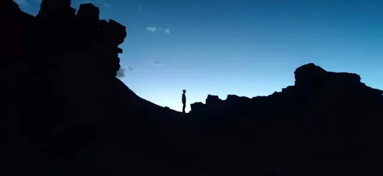

我科研
重新整理了 TCR 项目的交接逻辑。GitHub 不能只放脚本和结果，还得说明下一步为什么这样做，否则后来的人能看到文件，却看不到判断过程。

个人网站 · 持续更新
这里记录计算免疫学项目中的判断和教训，也保存摄影、游戏、模型收藏，以及那些暂时还没有形成完整文章的想法。
TCR αβ 配对、序列表征与模型能力审计。
进度随手写，重要问题再完整展开。
城市观察、自然风光、单机游戏与 Warhammer 40K。
随手记
不必每一次都总结出道理，先把当时真正发生的判断和感受留下来。
重新整理了 TCR 项目的交接逻辑。GitHub 不能只放脚本和结果，还得说明下一步为什么这样做，否则后来的人能看到文件，却看不到判断过程。
最近拍大场景时还是容易先被局部吸引。下一次准备固定一片街区多走几遍，专门练人物、建筑和道路在同一个画面里的关系。
《战地 V》里最吸引我的还是局势突然被打乱的时刻。原本守得很稳，一辆坦克从侧面顶进来，整队人只能临时换位置，输赢反而是其次。
科研
围绕冻结序列表征是否包含配对兼容信息，持续检查长度、V/J、个体来源和负样本构造带来的偏差。
长度、基因使用和组成信息能够解释多少，应该在复杂模型之前明确，而不是结果不理想以后才补做。
以服务器和最新 QC 为最高事实源，同时保留每次改变方向的理由，保证项目能够被真正接管。
长一些的记录
科研复盘偏事实和方法；摄影与游戏则记录实际经验，不强行把所有内容写成同一种语气。
先看长度、V/J 和组成基线，再检查序列表征是否有额外贡献，最后用匹配 decoy 或打乱标签确认结果不是数据结构造成的。
局部容易找到重点，但放到整条街道里画面就容易散。接下来主要练人物位置、空间层次和等待。
不追求写成完整评测，主要记录最喜欢什么、最不适应什么，以及它为什么在那段时间吸引我。
摄影
线上首版先放两张代表作品，摄影全集会在后续更新中逐步迁入。
2023 · 新疆 · DJI Mini 2
2026 · 成都 · Nikon Z6 II
长期项目
实验推进、模型审计、阶段结论和交接材料。
从局部细节走向完整场景，建立自己的城市影像档案。
不只留下通关日期，也保存机制、情绪和当时的生活状态。
关于我
我是唐直，就读于浙江大学爱丁堡大学联合学院生物信息学专业。目前的科研兴趣集中在计算免疫学、TCR 序列分析和机器学习方法审计。
科研以外，我长期拍摄城市和自然，也喜欢摇滚乐、单机游戏、数码硬件、老式 CD 与 Warhammer 40K 模型。这个网站不准备只做一份履历，而是希望把这些互不完全相干、但确实属于我的内容放在一起。